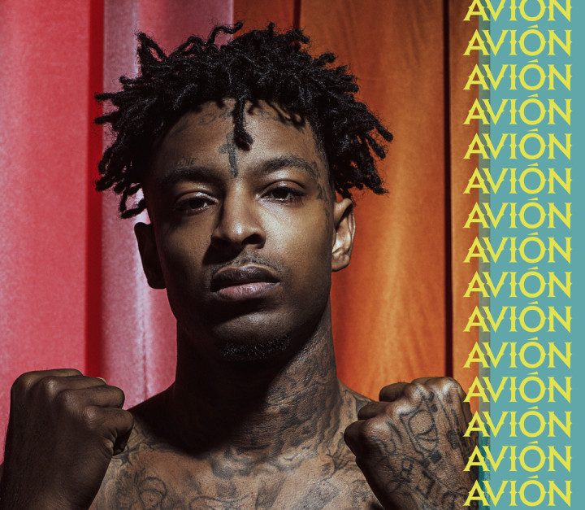

- 21 savage
- Travis Scott
- Migos
who is 21 savage?
21 savage의 사진

21 savage의 어린 시절
21 savage는 어렸을 적 친구를
잃었으며
6발의 총알을 몸으로 받아낸 적이 있다.
불우한 어린 시절과 빈민가 생활은 그에게
포기하지 않는 마음과 열정을 심어주었다.
21 savage 의 디스코그래피
정규
Issa Album (2017)
Without Warning (2017)
I am > I was (2018)